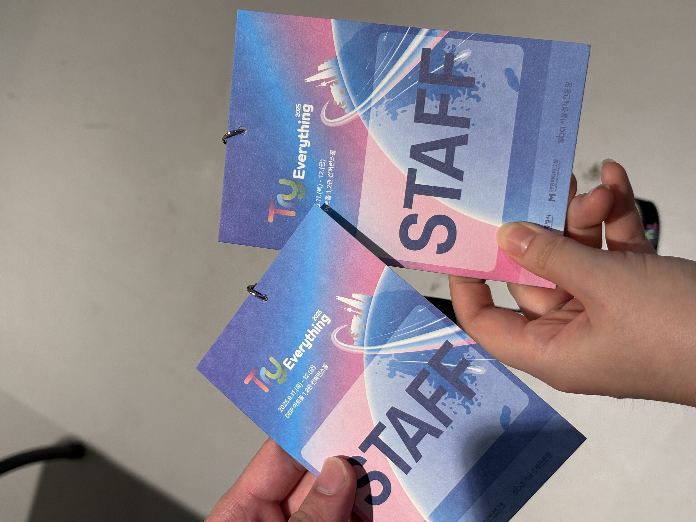
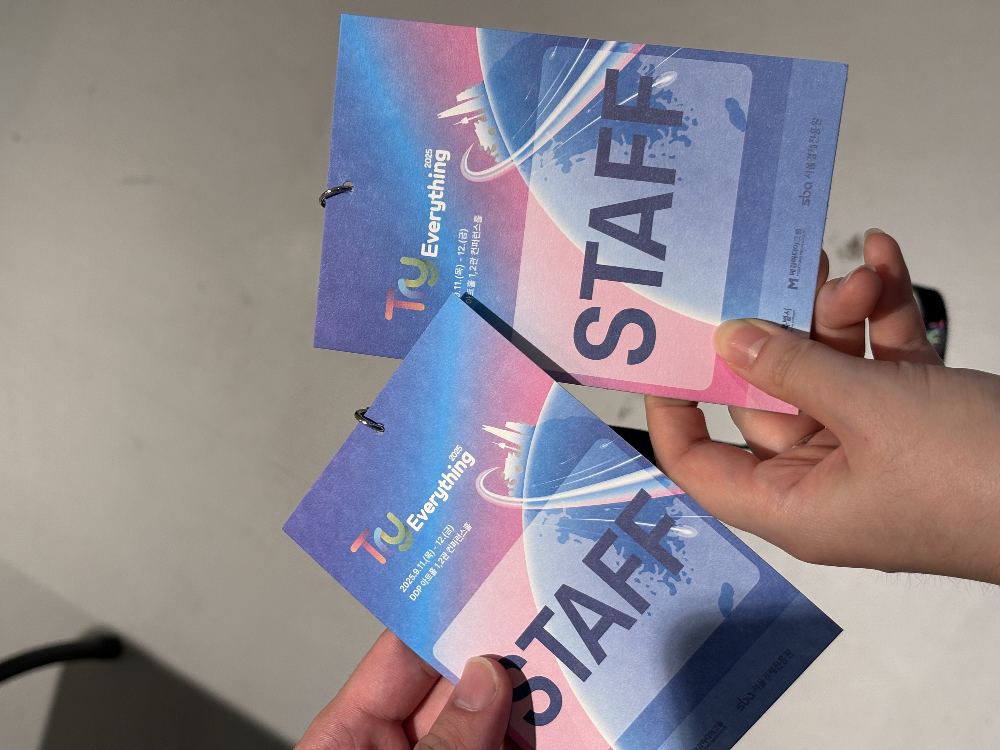

안녕하세요! KUIT 6기 WEB 1조 부원 김지현입니다.
저번학기에 웹 프로그래밍 수업을 듣긴 했지만 성적이 좀 제대로 공부해 보고 싶어서 기대 반 걱정 반으로 이번 웹 부원을 지원하게
되었습니다.
어어엄청난 실력자의 파트장님들과 튜터님들, 또 열정 넘치는 부원분들을
만나게 돼서 영광입니다🌟
저는 개발도 좋아하지만 새로운 경험에 끊임없이 도전하는 사람입니다.
작년 스융공 학생회 부원으로 축제 주점을 열었습니다!
정말 힘들고 재미있는 경험이었고 대학생활 중 가장 큰 추억으로 남게 되었습니다
이건 디자인홍보국장 친구가 만들어준 메뉴판인데 정말 너무 예쁘지 않나요 ?? 😉
자랑하려고 가져와봤습니다
감투병이 있어서 지금은 스마트ICT융합공학과 9대 학생회장을 맡고 있습니다 🙋♀️
 

9월 11-12일 DDP에서 진행된 IT행사
Try Everything2025에 서포터즈로 다녀왔습니다.
스타트업이랑 1대1로 매칭되어서 직접 부스를 운영하는 경험을 하였는데
기술을 배우기만 하던 제가 직접 기술을 설명하는 경험이 새로웠고 외국인 방문객들도 꽤 있어서 영어를 정말 열심히 해야겠다는 생각이 많이 든 시간이었습니다 ㅎㅎ...
아무 말이나 다 해도 잘 알아들어 주셔서 참 감사했습니다.
이번 웹 공부도 저에게 새로운 도전이 되었는데, 많이 성장하는 경험을
얻어가고싶습니다! 🔥